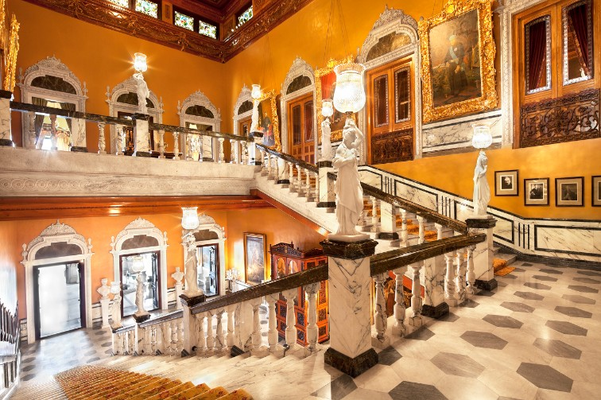

FALAKNUMA PALACE
 |
 |
 |
|
A visit to the Falaknuma Palace is like retracing the paths of Nizams, walking in step with the European royalty, feeling the presence of the flamboyant Begums, walking arm-in-arm with distinguished Heads of the State and walk the Kings way, slicing your path through the choicest architecture. It is like walking into the heavens as the palace stands high about 2000 feet above the city. The Falaknuma Palace’s exquisite beauty allows you to enjoy a journey into the blue skies, into the glided ages of time immemorial, where grandeur and lavishness is all you see.
Those who have basked in its opulence have rejoiced in its brilliantly designed Venetian chandeliers, uniquely made furniture, an awe inspiring marble staircases and sloshing fountains, enchanting statues, and objects d’art. The Mughal, Rajasthani and the Japanese gardens that were personally conceived by the Nizam adore the palace. The Falaknuma Palace has a very rich Library, that is every collector’s envy. This replica of the one library at Windsor Castle homes the rarest of manuscripts. It is also graced with one of the most applauded collections of the Holy Quran in India.
HOW TO REACH
Falaknuma Palace is located at a distance of 5 km from Charminar in old city and is easily accessible by road from various parts of Hyderabad. It also has a railway station, close to the hillock on which the palace was built. MMTS services run till Falaknuma.
TIMINGS
Monday - Friday :9.00 AM - 6.30 PM
Saturday : 9.00 AM - 6.30 PM
Sunday :9.00 AM - 6.30 PM
Public Holidays : 9.00 AM - 6.30 PM
WHERE TO EAT
There are many hotels and eateries in the old city area of Hyderabad.
SHOPPING
Visitors can buy jewelry and antiques in this area of Hyderabad. There are many fruit stalls near Falaknuma palace.
WHERE TO STAY
Telangana Tourism operates Plaza Hotel in Begumpet,Located at distance of 28.2kms from Falaknuma Palace is a comfortable stay. The Plaza hotel here is ideal for tourists visiting destinations in and around Hyderabad. There are standard and deluxe A/C rooms and the interiors are world-class, designed aesthetically to attract tourists. The rooms of the hotel are well-maintained, the environs look pleasing and this hotel is built in signature style in the midst of the city. There is also an attached restaurant here offering quality food for the visitors at specified timings. A prominent hotel of Telangana tourism, Plaza Hotel has well-laid tiles while the woodwork of suites indicate world-class construction, thereby creating a landmark hotel of the tourism department.
Haritha Taramathi baradari resort is located at a distance of 22.4kms from Falaknuma Palace ,is an attractive destination in Hyderabad. The resort has an Open Air Auditorium, which is ideal for corporate gatherings and private events. It also has an Air Cooled Theatre and Banquet Hall that are a perfect fit for special events, conferences and exhibitions. It comes with an attached pantry, a multi – cuisine A/C restaurant and a 50 PAX A/c Bar(saqi) for spending some quality time.The resort also has a souvenir shop and swimming pool that comes with a modern health club with best facilities for fitness and leisure. There are A/C suites and A/C rooms that can be an ideal way to enjoy luxury in the vicinity of a prominent monument. Spending time close to a heritage destination with best accommodation and quality food, with all trappings of a resort has never been this wonderful!
CONTACT
Phone number :
040 6629 8585